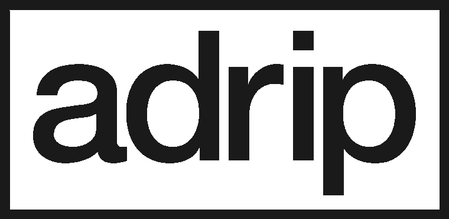

El sitio está bloqueado. Si tenés la clave, pasá.
Seis veces, lo establecido como el símbolo que le da inicio…

EST. 2022ACCEDE A:
Hay material que no está publicado. Obra en proceso, escritura sin filtro y datos de contacto que no dejo sueltos por ahí. Si tenés la clave, entrás.